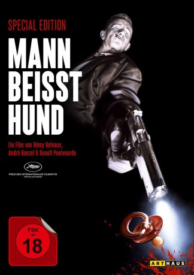

#3653 Mann beißt Hund
Alternativ: Man Bites Dog (Englischer Titel)
 
 IMDB-Wertung: 7.6 / 10
IMDB-Wertung: 7.6 / 10  Metascore: 0
Metascore: 0 
Ein Kamerateam begleitet den Killer Ben bei der Arbeit. Launig berichtet er über seinen Job und sein Leben. Bald weicht die anfängliche Distanz der Reporter der Kumpanei mit dem Mörder. Schließlich helfen sie sogar bei der Beseitigung der Leichen und legen selbst Hand an...
Jahr: 1992
Dauer: 96 Minuten
FSK: 18
Land: Belgien Studio: Arthaus FilmverleihTonspuren:
Untertitel:
Auflösung: 1080p (1920x1080) Größe: 8919 MB
Genre: Drama, Komödie, Krimi
Regisseur: Rémy Belvaux, André Bonzel, Benoît Poelvoorde
Drehbuch: Clement Sze-Kit Cheng
Soundtrack:
Darsteller:
 Benoît Poelvoorde als Ben
Benoît Poelvoorde als Ben- Benoît Mariage als Journalist
- Jacqueline Poelvoorde-Pappaert als Ben's Mother
- Nelly Pappaert als Ben's Grandmother
- Hector Pappaert als Ben's Grandfather
- Jenny Drye als Jenny
- Malou Madou als Malou
- Willy Vandenbroeck als Boby
- Rachel Deman als Mamie Tromblon
- André Laime als Bed-ridden Old Man
- Édith Le Merdy als Nurse
- Sylviane Godé als Rape Victim, Martine
- Zoltan Tobolik als Rape Victim's Husband
- Valérie Parent als Valerie
- Alexandra Fandango als Kalifa
- Olivier Cotica als Benichou
- Rémy Belvaux als Remy, Reporter
- André Bonzel als Andre, Cameraman
- Jean-Marc Chenut als Patrick, Sound Man #1
- Alain Oppezzi als Franco, Sound Man #2
- Vincent Tavier als Vincent, Sound Man #3
- Gina Cotica als Mother
- Ricardo Cotica als Child
- Pierre Vanbraekel als Father / Journalist
- Marcel Engels als Cameraman
- Franco Piscopo als Sound Recordist
- Alain François als Video Reporter
- Venelin Proikov als First Postman
- Fernard Dubois als Postman
- Antoine Chapelot als Wine Waiter
- Hughes Tavier als Buffet Waiter
- Pol Vanderwarren als Ben's Lawyer
- Anne LaGrange als Journalist
- Paul Bottemanne als Taxi Driver
- Vincent Merveille als Boxer / Broken Neck
- Irene Gilissen als Lady on Train
- Sabine Tavier als Madame Pipi
- Annamaria Szomolanyiova als Violinist
- Carlos Campo Miranda als Night Watchman
- Pascal Lebrun als Shot in the Shoulder Blade
- Stephanie Aubier als Shot in the Eye
- Alain Hologne als Shot in the Chest
- Micheline Hologne als Shot in the Temple
- Philippe Blasband als Shot in the Bath
- Aldo Fostier als Shot in the Left Groin
- Jean-Pol Cavillot als Shot in the Right Groin
- Anny Hologne als Shot in the Bag
- Elaine Leonard als Shot in the Yaw
- Marie Tavier als Strangled
- Bruno Belvaux als Featured Victim
Datei: X:\FSK18-1900-1999\Mann beißt Hund (1992, FSK18, 1920x1080).mkv seit 13.05.2016
Festplatte: FSK18
 Es gibt insgesamt 108 Filme in der Gruppe 'FSK18-1900-1999'
Es gibt insgesamt 108 Filme in der Gruppe 'FSK18-1900-1999'